There are other types of Docker network drivers, but these are the most commonly used on a development machine. The others are outside the scope of this course.
Docker Isolation
Learn about Docker container isolation mechanisms as it pertains to networking and storage.
On this page
Table of contents
Docker networks
Docker networking allows containers to communicate with each other and with external services outside of Docker.
You can list the available Docker networks on your system using the command:
$> docker network ls
NETWORK ID NAME DRIVER SCOPE
4fbcb80199ab bridge bridge local
0dca506f97c0 host host local
d54b832d124f none null local
There are 3 networks available out of the box in a fresh Docker installation:
- The
bridgenetwork is the default network for containers. It provides network isolation between the host system and the containers, while allowing communication between containers on the same bridge network. - The
hostnetwork removes network isolation between the container and the host system. Containers using the host network share the host’s network stack and can directly access the host’s network interfaces. - The
nonenetwork disables all networking for the container.
The default bridge network
Let’s demonstrate how the default bridge network works.
You may remember that before you started deployment exercises, you established
a bi-directional TCP connection between servers using the nc (netcat)
command. Let’s do the same
between containers.
Run an container from the Ubuntu base image, naming it nc-server:
$> docker run --name nc-server --rm -it ubuntu:noble
Your prompt should have changed to reflect that you are now inside the container.
Install netcat in this container:
$> apt update
$> apt install -y netcat-openbsd
You should now be able to run the nc command like you did in the TCP exercise
(but from inside the container):
$> nc -l 3000
This starts netcat in listening mode (with the -l option) on TCP port
3000. It now waits for a TCP client to connect on that port.
Leave this running and open a new terminal window. In the new terminal, inspect
the nc-server container:
$> docker inspect nc-server
...
"Networks": {
"bridge": {
"IPAMConfig": null,
"Links": null,
"Aliases": null,
"MacAddress": "92:6b:1c:1c:18:13",
"DriverOpts": null,
"GwPriority": 0,
"NetworkID": "58a6dc73cfa3ff37e7...",
"EndpointID": "146ed4bb30b95ff2a...",
"Gateway": "172.17.0.1",
"IPAddress": "172.17.0.2",
"IPPrefixLen": 16,
"IPv6Gateway": "",
"GlobalIPv6Address": "",
"GlobalIPv6PrefixLen": 0,
"DNSNames": null
}
},
...
The output is a JSON object with a lot of information about the container.
Somewhere in there, you should see the Networks property, indicating that the
container is connected to the bridge network. You should also see the
container’s IP address on that network, in this example: 172.17.0.2 (it might
be another address on your machine). Copy this address.
Now run a second container from the same base image, naming it nc-client:
$> docker run --name nc-client --rm -it ubuntu:noble
Again, your prompt should have changed to reflect that you are now inside the new container.
Install netcat in this container as well:
$> apt update
$> apt install -y netcat-openbsd
From this new container, use netcat to connect to the nc-server container
using its IP address on the bridge network:
$> nc 172.17.0.2 3000
Make sure to use the same IP address as shown in the output of the docker inspect nc-server command you ran earlier.
You should now have a bi-directional TCP connection open between the two
containers. Type something in the nc-client container terminal:
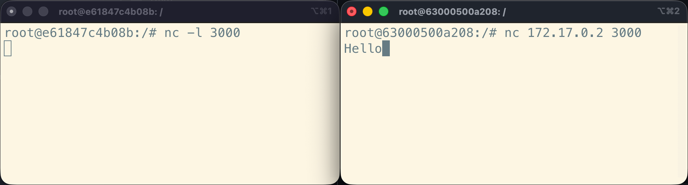
You should see the message appear in the nc-server container terminal as soon
as you press Enter:
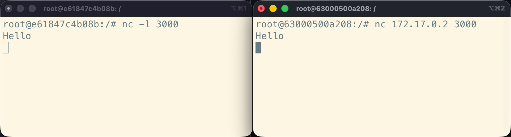
Similarly, if you type something in the nc-server container terminal:
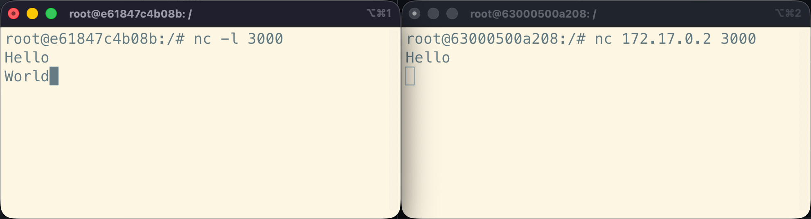
You should see the message appear in the nc-client container terminal as soon
as you press Enter:
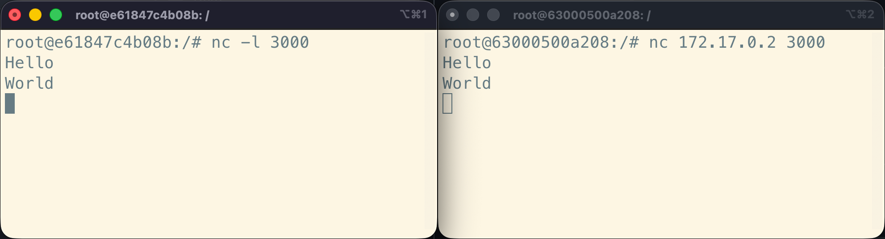
This demonstrates that the two containers can communicate with each other over the default bridge network.
Indeed, if you inspect the nc-client container from a third terminal window,
you should see that it is also connected to the bridge network, with its own
IP address (172.17.0.3 in this example):
$> docker inspect nc-client
...
"Networks": {
"bridge": {
"IPAMConfig": null,
"Links": null,
"Aliases": null,
"MacAddress": "0a:6c:41:11:c4:e9",
"DriverOpts": null,
"GwPriority": 0,
"NetworkID": "58a6dc73cfa3ff37e7...",
"EndpointID": "77d30c2e90d76910f...",
"Gateway": "172.17.0.1",
"IPAddress": "172.17.0.3",
"IPPrefixLen": 16,
"IPv6Gateway": "",
"GlobalIPv6Address": "",
"GlobalIPv6PrefixLen": 0,
"DNSNames": null
}
}
...
This is the architecture of what you have just set up:
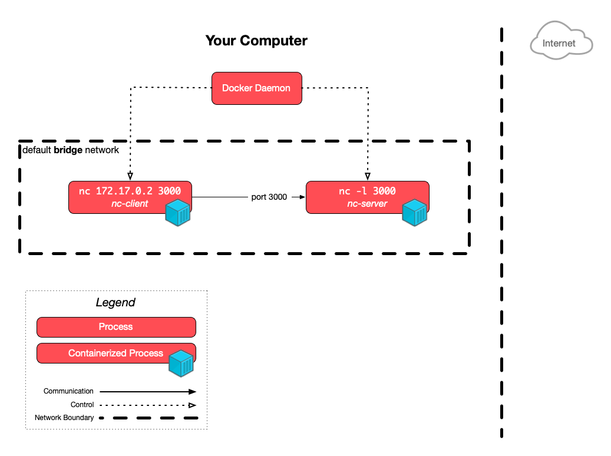
{kind=link}
Great! Now stop both netcat containers by pressing Ctrl+C and then running
exit in each terminal.
Create isolated networks
You can create your own isolated Docker networks using the docker network create <name> command. Let’s create two networks named net1 and net2:
$> docket network create net1
cff44c36cd81b29908cf1a06fd6011cf67d8ffe841af1eb550250e433cfc2fa3
$> docker network create net2
36677fbfb79571eab4ba1541758bf9cce8461dc7c9ec0f1e4e3f03bbbb39e328
The network IDs returned by the commands will be different on your machine.
Run docker network ls again to check that the new networks were created:
$> docker network ls
NETWORK ID NAME DRIVER SCOPE
58a6dc73cfa3 bridge bridge local
0dca506f97c0 host host local
10e2717736fa net1 bridge local
36677fbfb795 net2 bridge local
d54b832d124f none null local
As you can see, Docker creates networks with the bridge driver by default. But
these are not the same network as the default bridge network: they are
isolated from it and from each other.
Let’s demonstrate that. Run a new nc-server container again, but this time
attach it to the net1 network using the --network <name> option instead of
leaving it on the default bridge network:
$> docker run --name nc-server --network net1 --rm -it ubuntu:noble
Install netcat in this container, and run it in listening mode on port 3000 as before:
$> apt update
$> apt install -y netcat-openbsd
$> nc -l 3000
In another terminal, run a new nc-client container, this time attaching it to
the net2 network:
$> docker run --name nc-client --network net2 --rm -it ubuntu:noble
Install netcat in this new container as well:
$> apt update
$> apt install -y netcat-openbsd
Now open a third terminal and inspect the nc-server container to get its IP
address on the net1 network:
$> docker inspect nc-server
...
"Networks": {
"net1": {
"IPAMConfig": null,
"Links": null,
"Aliases": null,
"MacAddress": "52:e7:07:9b:1a:f5",
"DriverOpts": null,
"GwPriority": 0,
"NetworkID": "10e2717736fa2d7a3a...",
"EndpointID": "2cd905711f423d477...",
"Gateway": "172.18.0.1",
"IPAddress": "172.18.0.2",
"IPPrefixLen": 16,
"IPv6Gateway": "",
"GlobalIPv6Address": "",
"GlobalIPv6PrefixLen": 0,
"DNSNames": [
"nc-server",
"1a5eca960467"
]
}
}
...
As you can see, Docker indicates that the container is connected to the net1
network instead of the bridge network. In this example, its IP address is
172.18.0.2 (it might be different on your machine). Copy this address.
From the nc-client container terminal, try to connect to the nc-server
container using its IP address on the net1 network:
$> nc 172.18.0.2 3000
You can try typing something in the nc-client container terminal and pressing
Enter, or the other way around, but it won’t work this time—nothing will appear
in the other terminal:
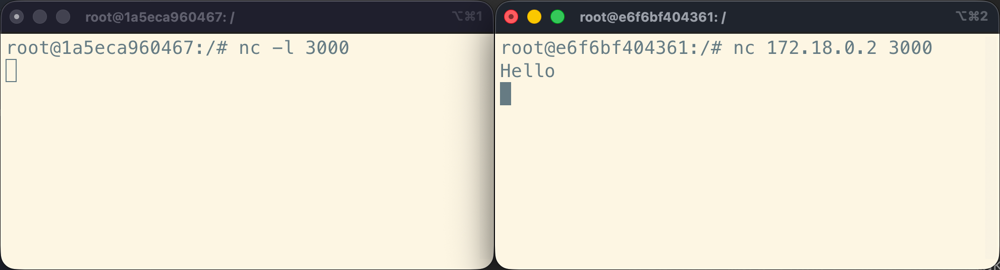
By default, netcat will not fail or show any error message if it cannot connect
to the server. If you want to see an error, stop the nc command with Ctrl-C
in the nc-client container, and re-run the command with the additional -w 3
option to wait at most 3 seconds for a connection before giving up:
$> nc -w 3 172.18.0.2 3000
# 3 seconds later...
$> echo $?
1
Netcat will exit with a non-zero status code to indicate that it could not connect.
These two containers cannot communicate with each other. Indeed, if you
inspect the nc-client container from another terminal window, you should see
that it’s connected to the net2 network, with its own IP address (172.19.0.2
in this example):
$> docker inspect nc-client
...
"Networks": {
"net2": {
"IPAMConfig": null,
"Links": null,
"Aliases": null,
"MacAddress": "7a:df:a1:99:26:af",
"DriverOpts": null,
"GwPriority": 0,
"NetworkID": "36677fbfb79571eab4...",
"EndpointID": "3af04b372fc784400...",
"Gateway": "172.19.0.1",
"IPAddress": "172.19.0.2",
"IPPrefixLen": 16,
"IPv6Gateway": "",
"GlobalIPv6Address": "",
"GlobalIPv6PrefixLen": 0,
"DNSNames": [
"nc-client",
"e6f6bf404361"
]
}
}
...
You learned about the concept of IP subnets and netmasks when we covered Unix networking.
Look at the IPPrefixLen property in the JSON description of both containers,
which defines the netmask: it is 16 in both examples above, meaning the first
16 bits of each IP address define the subnet. In other words: the first half of
each adress is the subnet, since IPv4 addresses have 32 bits. This means that:
| Container | IP address | Netmask | CIDR | Subnet |
|---|---|---|---|---|
nc-server |
172.18.0.2 |
16 bits | /16 |
172.18.X.Y |
nc-client |
172.19.0.2 |
16 bits | /16 |
172.19.X.Y |
This is what the architecture now looks like:
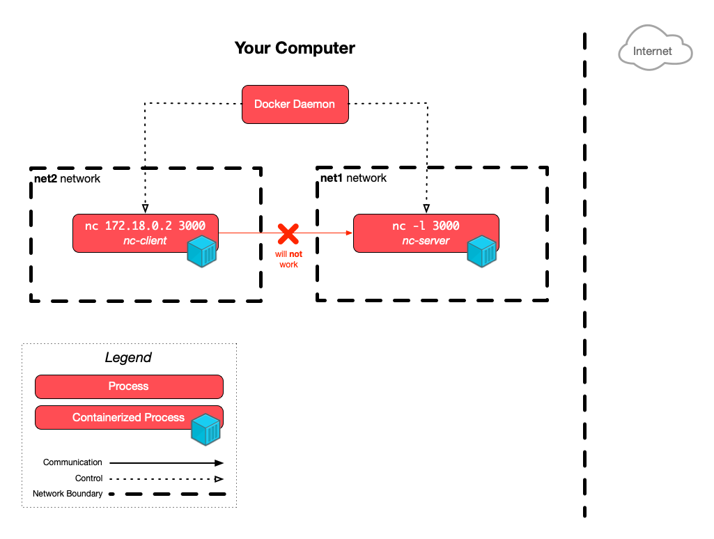
{kind=link}
Both containers are in different, isolated subnets managed by Docker. The
nc-client container can only reach IP addresses in the 172.19.X.Y subnet,
while the nc-server container can only reach IP addresses in the 172.18.X.Y
subnet. This is why they cannot communicate with each other.
Automating network creation
You will generally want to create isolated networks for your applications in production for more isolation and thus increased security. You can do this manually as shown above, but it’s more common to automate this using Compose files. We will see how to do this when we learn about Docker Compose next.
Persistent storage
There are two main ways to persist data in Docker:
- Using bind mounts to mount a directory from the host machine into the container.
- Using volumes, which are managed by Docker (stored in a specific location on the host machine by default).
We will first demonstrate that data created inside a container is lost when the container is removed, and then we will see how to persist data using both bind mounts and volumes.
Container file system isolation
As you learned in the previous Docker lesson, the file system of a container is a thin writable layer over its image’s read-only layers. This means that any data created or modified inside a container is lost when the container is removed.
Let’s demonstrate this. Run a new container from the official nginx image:
$> docker run -d --name web -p 3000:80 nginx:1.29
The -d (or --detach) option runs the container in the background. The
--name option gives the container a name for easier reference. The -p (or
--publish) option maps port 3000 on the host machine to port 80 in the
container.
You should see this container running with docker ps:
$> docker ps
CONTAINER ID IMAGE COMMAND CREATED STATUS PORTS NAMES
b720d8b8d7d7 nginx:1.29 "/docker-entrypoint.…" 2 seconds ago Up 1 second 0.0.0.0:3000->80/tcp, [::]:3000->80/tcp web
Since you have published its main port, you should also be able to access this nginx server in your browser at http://localhost:3000:
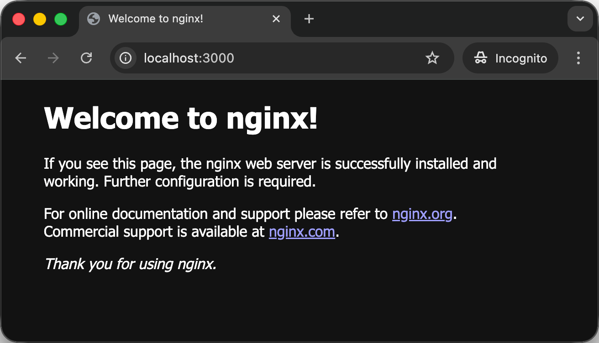
Great! You have nginx running in a container on your machine.
Let’s make a small change. Start a shell session inside the running web
container:
$> docker exec -it web /bin/bash
The docker exec subcommand executes a command in a running container. The -i
(or --interactive) option keeps standard input open, and the -t (or --tty)
option allocates a pseudo-TTY (terminal). Both options are needed to run an
interactive shell session.
Your prompt should have changed to reflect that you are now inside the container.
Let’s investigate a bit. We know that the main nginx configuration file is
generally located at /etc/nginx/nginx.conf. Let’s see what’s in it:
root@b720d8b8d7d7:/# cat /etc/nginx/nginx.conf
user nginx;
worker_processes auto;
events {
worker_connections 1024;
}
http {
include /etc/nginx/mime.types;
default_type application/octet-stream;
log_format main '$remote_addr - $remote_user [$time_local] "$request" '
'$status $body_bytes_sent "$http_referer" '
'"$http_user_agent" "$http_x_forwarded_for"';
access_log /var/log/nginx/access.log main;
sendfile on;
#tcp_nopush on;
keepalive_timeout 65;
#gzip on;
include /etc/nginx/conf.d/*.conf;
}
The line that interests us most is the include directive at
the end:
include /etc/nginx/conf.d/*.conf;
This tells nginx to include any configuration files located in the
/etc/nginx/conf.d/ directory.
Note that this is a simpler nginx configuration than what you find when you install nginx on a regular server like you did when you learned about reverse proxying.
There are no sites-available or sites-enabled directories here, for example;
only conf.d. Containers are intended to be minimal, so they often have simpler
configurations than a full-fledged installation.
Additionally, containers are also supposed to be ephemeral: you are not supposed
to modify running containers directly in production, so the rationale for the
sites-available and sites-enabled directories, i.e. to be able to quickly
disable/enable sites, does not apply here. The Docker way would be to build a
new image with the desired configuration changes instead, or to use a reverse
proxy that is aware of Docker and able to re-configure itself automatically,
like Traefik or Caddy.
So let’s see what’s in this conf.d directory:
root@b720d8b8d7d7:/# ls /etc/nginx/conf.d
default.conf
Just one site configuration file: default.conf. Let’s see what’s in it:
root@b720d8b8d7d7:/# cat /etc/nginx/conf.d/default.conf
server {
listen 80;
listen [::]:80;
server_name localhost;
#access_log /var/log/nginx/host.access.log main;
location / {
root /usr/share/nginx/html;
index index.html index.htm;
}
#error_page 404 /404.html;
# redirect server error pages to the static page /50x.html
#
error_page 500 502 503 504 /50x.html;
location = /50x.html {
root /usr/share/nginx/html;
}
...
}
This is a simple site configuration that serves static files, similar to the one you created during the nginx static site deployment exercise:
- The
rootdirective specifies the directory where the static files are located: the/usr/share/nginx/htmldirectory inside the container. - The
indexdirective specifies the default files to serve when a directory is requested:index.htmlorindex.htm.
So let’s look at that index.html file:
root@b720d8b8d7d7:/# cat /usr/share/nginx/html/index.html
<!DOCTYPE html>
<html>
<head>
<title>Welcome to nginx!</title>
<style>
html { color-scheme: light dark; }
body { width: 35em; margin: 0 auto;
font-family: Tahoma, Verdana, Arial, sans-serif; }
</style>
</head>
<body>
<h1>Welcome to nginx!</h1>
<p>If you see this page, the nginx web server is successfully installed and
working. Further configuration is required.</p>
<p>For online documentation and support please refer to
<a href="http://nginx.org/">nginx.org</a>.<br/>
Commercial support is available at
<a href="http://nginx.com/">nginx.com</a>.</p>
<p><em>Thank you for using nginx.</em></p>
</body>
</html>
Great! You’ve found the HTML for the default nginx welcome page that you see in your browser:
Now let’s modify this file to see what happens. Of course, Docker images are minimal, so you don’t even have a text editor installed by default. Install your favorite command line editor:
root@b720d8b8d7d7:/# apt update
root@b720d8b8d7d7:/# apt install -y nano # or vim
Now open the index.html file:
root@b720d8b8d7d7:/# nano /usr/share/nginx/html/index.html # or vim
Modify this line:
<h1>Welcome to nginx!</h1>
To this:
<h1>Welcome to nginx in a container!</h1>
Save with Ctrl-X, then Y, then Enter if you are using nano. Save with
Esc, then :wq, then Enter if you are using Vim.
Now exit the container shell:
root@b720d8b8d7d7:/# exit
Reload the page in your browser at http://localhost:3000. You should see the updated welcome message:
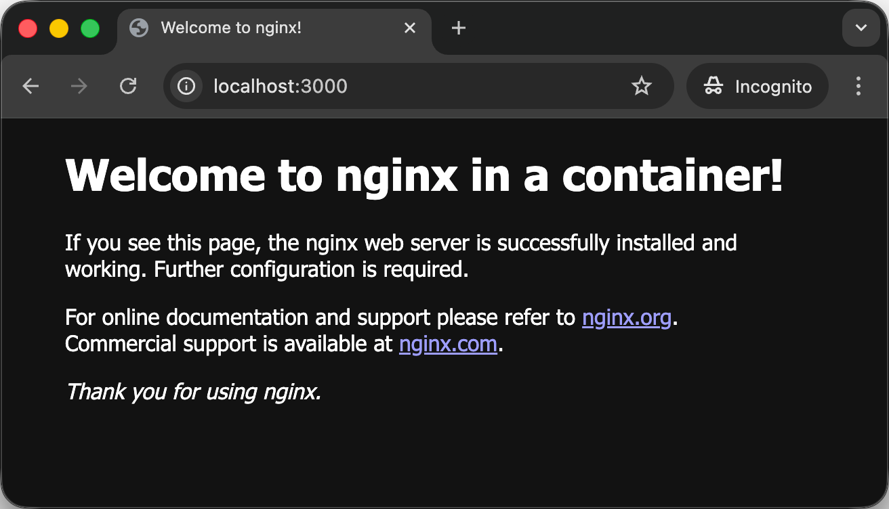
Amazing! You have successfully modified a file inside a running container.
Going back to what we discussed about layers in the previous lesson, you have modified the thin writable layer of the container at the top of the Union File System:
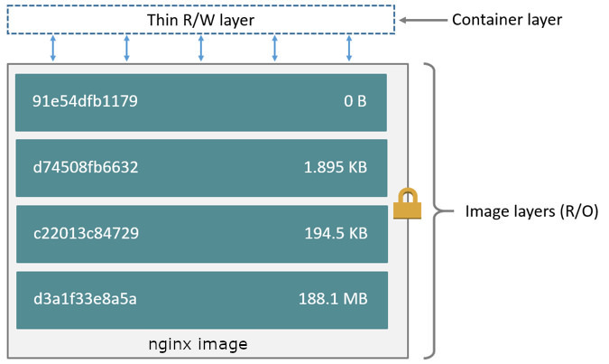
Now stop the web container:
$> docker stop web
web
Confirm the container is no longer running:
$> docker ps
CONTAINER ID IMAGE COMMAND CREATED STATUS PORTS NAMES
Stopping the container has stopped the nginx server that was running in it, so you should no longer be able to access it in your browser:
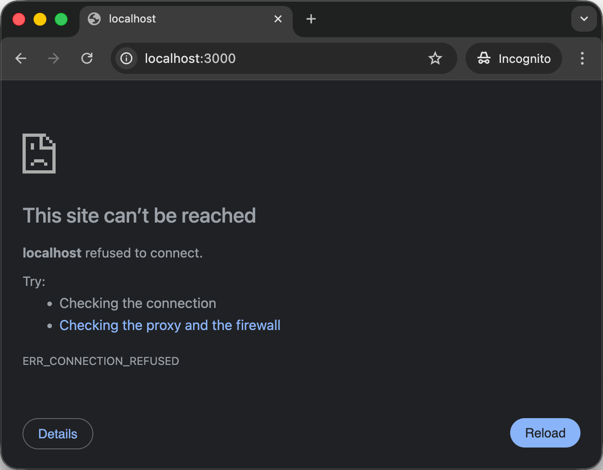
Start the container again:
$> docker start web
web
Visit http://localhost:3000 again in your browser:
Yay! The modified welcome message is still there. This is because the thin writable layer of the container is preserved when the container is stopped, so your changes are still there.
Run a second container named web2 based on the same official nginx image:
$> docker run -d --name web2 -p 3001:80 nginx:1.29
You should have two containers running, one exposed on port 3000 and the other on port 3001:
$> docker ps
CONTAINER ID IMAGE COMMAND CREATED STATUS PORTS NAMES
d85ff1b3ecf4 nginx:1.29 "/docker-entrypoint.…" 2 minutes ago Up 2 minutes 0.0.0.0:3001->80/tcp, [::]:3001->80/tcp web2
b720d8b8d7d7 nginx:1.29 "/docker-entrypoint.…" 49 minutes ago Up 3 minutes 0.0.0.0:3000->80/tcp, [::]:3000->80/tcp web
Now visit both http://localhost:3000 and
http://localhost:3001 in your browser. You should see
the modified welcome message on port 3000, since it’s served by the web
container that you modified earlier; and the original welcome message on port
3001, since it’s served by the fresh web2 container that you just created and
never modified:
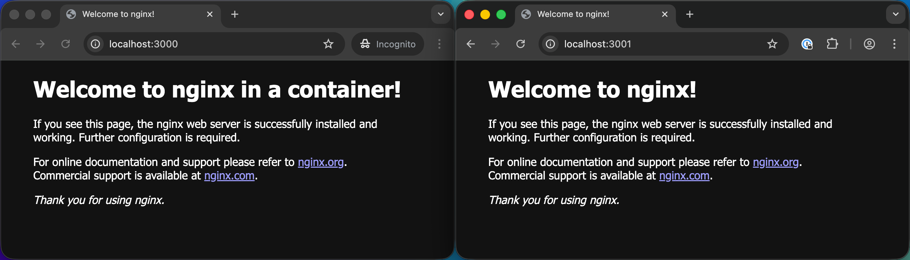
This shows you that each container has its own isolated file system. Changes made in one container do not affect other containers, even if they are based on the same image.
At a lower level, each container has its own thin writable layer on top of the same read-only image layers:
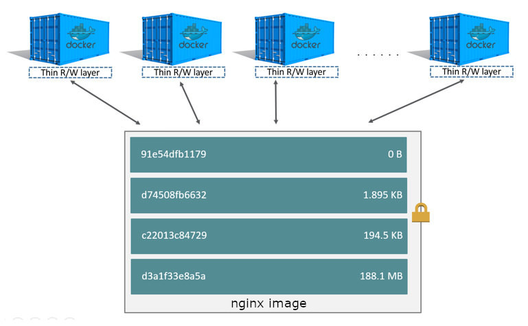
If you want to take this demonstration a step further, start a shell session
into the new web2 container and make a different change to the welcome page,
then see the effect in your browser. You will see that the changes you make in
the web container do not affect the web2 container, and vice versa.
Stop and remove both containers:
$> docker stop web web2
web
web2
$> docker rm web web2
web
web2
Now you haven’t just stopped the containers, you have also removed them. Re-run
the web container with the same command as before:
$> docker run -d --name web -p 3000:80 nginx:1.29
Visit http://localhost:3000 in your browser again:
You are seeing the original welcome message again. This is because when you
removed the web container, its thin writable layer was permanently deleted by
the Docker daemon. It only existed as long as the container existed.
When you just re-ran the container, a new and empty thin writable layer was created on top of the same read-only image layers, so any changes you had previously made were lost.
Stop and remove the web container again:
$> docker rm -f web
web
The -f (or --force) option of the docker rm subcommand forces the removal
of a running container by stopping it first.
One way to persist data beyond the lifetime of a container, as we’ve already
seen in the previous lesson, is to create an image from the modified container
using docker commit. This persists the thin
writable layer of the container as a new read-only image layer. You can then run
new containers from that image, where the changes will be present.
This works, and is the basis of how Docker images are built with Dockerfiles as you’ve previously seen. It is a good way to persist:
- The code of an application that you intend to containerize (e.g. the code of
the FibScale application you copied with a
COPYinstruction in the Dockerfile). - Dependencies required by that application (e.g. the Ruby gems that you
installed for the FibScale application with the
bundle installcommand). - System packages and libraries required by that application (e.g. the base
Ubuntu image and any additional packages you might install with
apt).
All of these are things that you want to bake into Docker images so that new containers can be started from those images with the basics already in place. However, this is not the recommended way to persist data in Docker, especially these types of data:
- Application data, such as database files.
- User-generated content, such as uploaded files.
- Configuration files that may change frequently (and may contain sensitive data).
For these types of data, it’s better to use bind mounts or volumes, which we will see next.
Using bind mounts
Docker bind mounts allow you to mount a directory from the host machine (the machine running the Docker daemon) into a container. This way, any data created or modified in that directory inside the container is actually stored on the host machine, and thus persists beyond the lifetime of the container.
Let’s create a directory for this demonstration:
$> cd /path/to/projects
$> mkdir docker-bind-mount-demo
$> cd docker-bind-mount-demo
Use your favorite editor to create an index.html file in this directory with
the following content:
<!DOCTYPE html>
<html>
<head>
<title>Welcome to nginx!</title>
<style>
html {
color-scheme: light dark;
}
body {
width: 35em;
margin: 0 auto;
font-family: Tahoma, Verdana, Arial, sans-serif;
}
</style>
</head>
<body>
<h1>Welcome to nginx!</h1>
<p>
The nginx web server is successfully installed and running in a Docker
container.
</p>
<p><em>Thank you for using my container.</em></p>
</body>
</html>
You should now have a directory with an index.html file in it:
$> ls
index.html
Now run a new web container
Now run a new container from the official nginx image, this time using the
-v (or --volume) option to create a bind mount that mounts the current
directory from the host machine into the container at the path
/usr/share/nginx/html, where nginx serves its static files from:
$> docker run -d --name web -p 3000:80 -v "$PWD:/usr/share/nginx/html" nginx:1.29
The new -v (or --volume) option creates a bind mount from the current
directory on the host machine to the /usr/share/nginx/html directory inside
the container (expressed as <host-path>:<container-path>).
The $PWD environment variable, meaning print working directory,
contains the absolute path of the current directory on a Unix system.
Visit http://localhost:3000 in your browser and you should see the welcome page you just created:
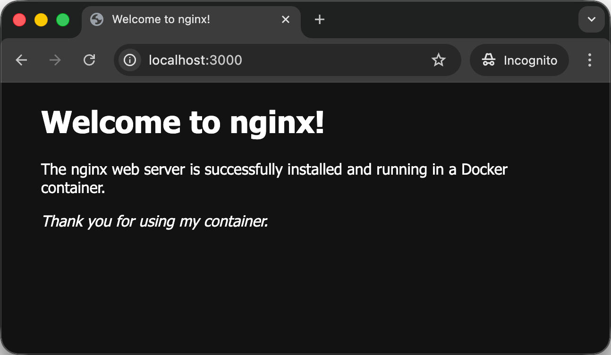
Note that this welcome page is different from the default one you saw earlier.
This is because nginx is now serving the index.html file from the bind mount
you created, which is located on your host machine.
Run a shell session inside the running web container:
$> docker exec -it web /bin/bash
Your prompt should have changed to reflect that you are now inside the container. Install your favorite command line editor again (remember, this is a brand new container):
root@556448e19250:/# apt update
root@556448e19250:/# apt install -y nano # or vim
Edit the index.html file in the container:
root@556448e19250:/# nano /usr/share/nginx/html/index.html # or vim
Modify this line:
<h1>Welcome to nginx!</h1>
To this:
<h1>Welcome to nginx modified!</h1>
Visit http://localhost:3000 in your browser again. You should see the updated welcome message:
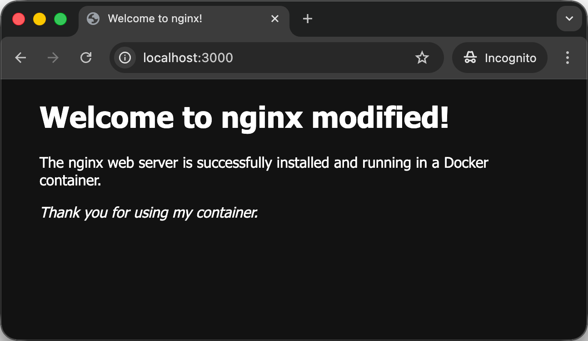
Great! You have successfully modified a file inside the container that is part of a bind mount. Now exit the container:
root@556448e19250:/# exit
Now check the index.html file on your host machine in the current directory:
$> cat index.html
You should see the modified title:
<h1>Welcome to nginx modified!</h1>
Amazing! This shows you what a bind mount is: the /usr/share/nginx/html
directory inside the container is currently mapped by the Docker daemon to the
current directory on the host machine. Any changes made to files in this
directory inside the container will actually be made to the files on the host
machine, and vice versa.
Modify the index.html file again, but this time do so on your machine (not
inside the container), using your favorite editor (command line or not).
Modify this line:
<h1>Welcome to nginx modified!</h1>
To this:
<h1>Welcome to nginx modified again!</h1>
Visit http://localhost:3000 in your browser again. You should see the updated welcome message:
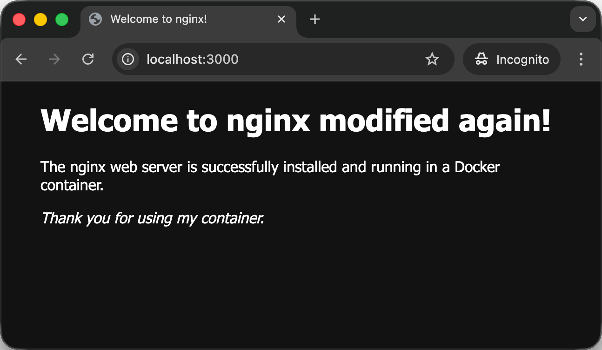
This demonstrates that changes made to files in the bind mount directory on the host machine are immediately reflected inside the container.
Indeed, you can display the contents of the index.html file from inside the
container again to confirm that the changes you made on the host machine are
also visible from inside the container:
$> docker exec web cat /usr/share/nginx/html/index.html
You should see the modified title:
<h1>Welcome to nginx modified again!</h1>
Note that a bind mount is not a copy. Instead, the directory on the host machine
is directly mounted into the container as a traditional Unix mount, much like an
external hard drive or network drive would be mounted. You are actually seeing
the same directory from both the host machine and the container. This is
magically handled for you by the Docker daemon using the -v/--volume option.
You can confirm this using the df command you previously used to inspect disk
usage when learning about Unix basics. If you run this
command inside the container, you should see that the /usr/share/nginx/html
directory is a separate mount:
$> docker exec web df -h
Filesystem Size Used Avail Use% Mounted on
overlay 911G 6.7G 858G 1% /
tmpfs 64M 0 64M 0% /dev
shm 64M 0 64M 0% /dev/shm
/dev/vda1 911G 6.7G 858G 1% /etc/hosts
/run/host_mark/Users 927G 684G 244G 74% /usr/share/nginx/html
tmpfs 3.9G 0 3.9G 0% /proc/scsi
tmpfs 3.9G 0 3.9G 0% /sys/firmware
Additionally, the indicated Size, Used and Avail values for the
/usr/share/nginx/html mount should match those of your own host machine (at
least on Unix systems).
Now stop and remove the web container:
$> docker rm -f web
web
Confirm that the container is no longer running:
$> docker ps
CONTAINER ID IMAGE COMMAND CREATED STATUS PORTS NAMES
Confirm that the container has been completely removed by listing all containers (including stopped ones):
$> docker ps -a
CONTAINER ID IMAGE COMMAND CREATED STATUS PORTS NAMES
...
You might see container from previous Docker experiments in the list, but the
web container you just removed should no longer be there.
Visit http://localhost:3000 in your browser again. You should no longer be able to access the nginx server, since the container has been removed:
Re-run the web container with the same command as before, including the bind
mount:
$> docker run -d --name web -p 3000:80 -v "$PWD:/usr/share/nginx/html" nginx:1.29
Visit http://localhost:3000 in your browser again. You should still see the modified welcome message:
Great! You’ve learned a way to persist data beyond the lifetime of a container using bind mounts.
When you remove a container that has a bind mount, the thin writable layer of the container is deleted, as before, but the bind mount is separate from that layer. The data in the bind mount directory on the host machine remains intact.
This means that when you run a fresh new container with an empty thin writable layer, but with the same bind mount, the data in the bind mount directory is still there and accessible from the new container, since it exists on your host machine, independent of the container’s lifecycle.